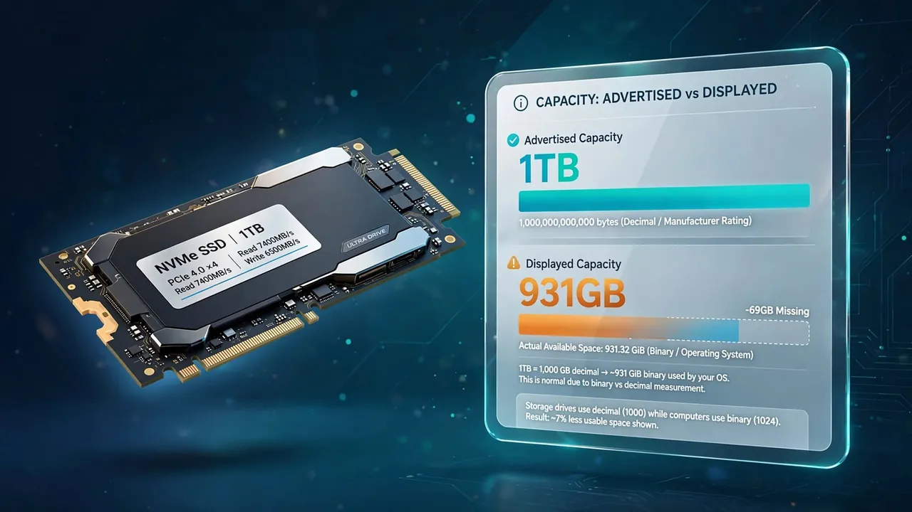
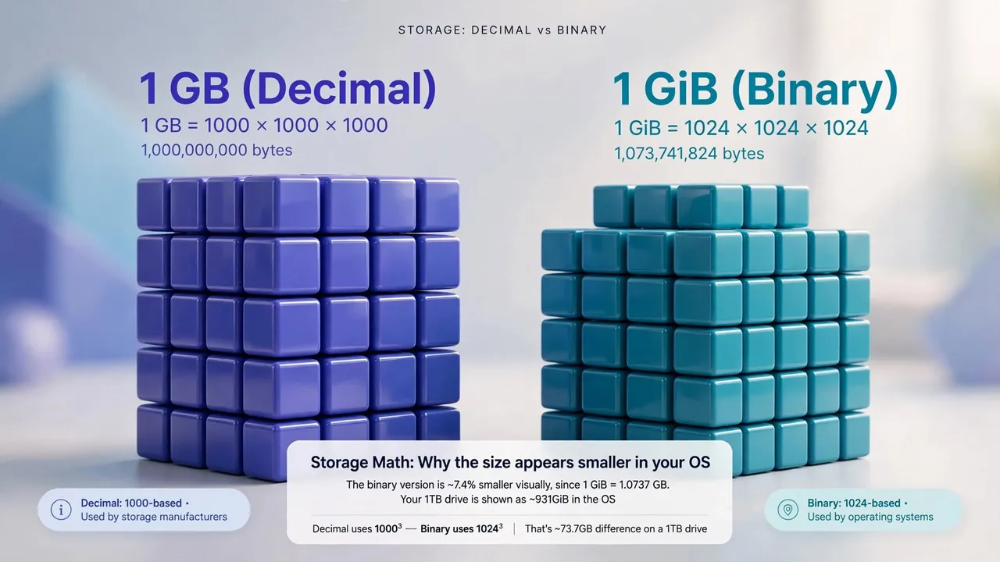
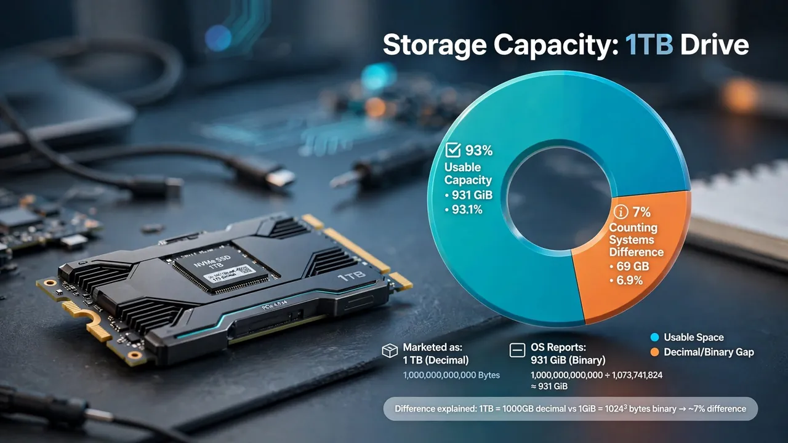
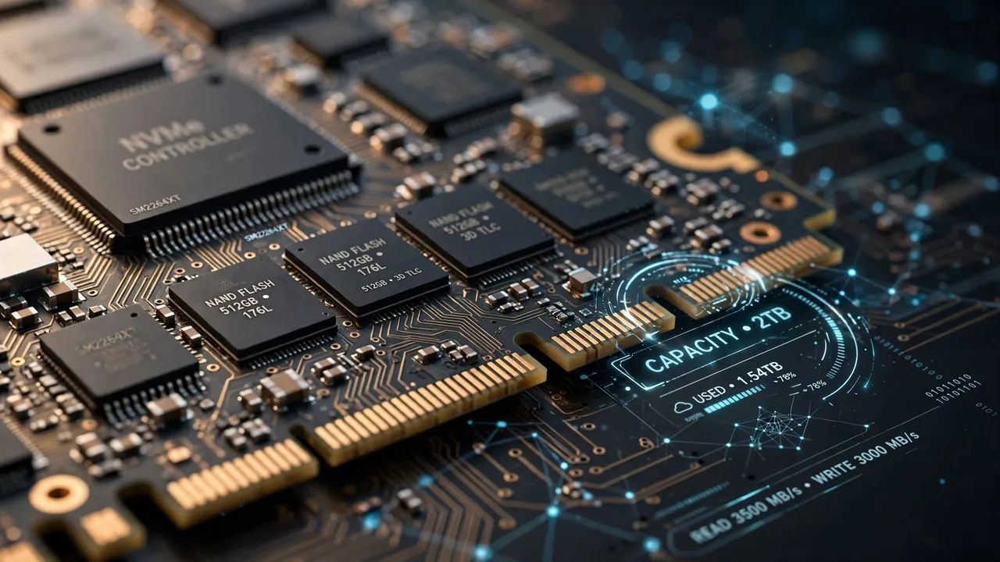

Why does my 1TB hard drive only show 931GB?
Nothing is missing and nobody is cheating you. Your drive and your operating system are counting in two different number systems.
By Mubasher Hussain · Published 2026-02-04 · Updated 2026-10-03 · 1108 words · about 5 minute read

You bought a 1TB drive. You plug it in, open your file manager, and it reports 931GB. Roughly 69GB has apparently evaporated before you have saved a single file. This is the single most common storage question on the internet, and the answer is not what most people assume.
Nothing is missing. The drive contains exactly what it says on the box. What you are seeing is two different definitions of the word gigabyte, both in active use, producing two different numbers for the same physical hardware.
Two definitions of a gigabyte
Every other unit prefix in science means a power of ten. A kilometre is 1,000 metres. A kilogram is 1,000 grams. When the SI system defines kilo, it means exactly 1,000.

Computers, however, address memory in powers of two. The closest power of two to 1,000 is 2¹⁰, which is 1,024, near enough that early computer scientists borrowed the SI prefixes and quietly redefined them. A kilobyte became 1,024 bytes, a megabyte 1,024², and a gigabyte 1,024³.
That approximation is fine at small scales. A kilobyte defined as 1,024 is only 2.4% larger than one defined as 1,000. But the error compounds with every prefix you climb.
| Unit | Decimal (×1000) | Binary (×1024) | Difference |
|---|---|---|---|
| Kilobyte | 1,000 | 1,024 | 2.4% |
| Megabyte | 1,000,000 | 1,048,576 | 4.9% |
| Gigabyte | 1,000,000,000 | 1,073,741,824 | 7.4% |
| Terabyte | 1,000,000,000,000 | 1,099,511,627,776 | 10.0% |
Where the 931 comes from
Storage manufacturers use the decimal definition. A drive sold as 1TB contains 1,000,000,000,000 bytes. That is not marketing sleight of hand, it is the SI definition, and it is what the standards say a terabyte is.
Windows, however, divides that byte count by 1,024 three times and then labels the result "GB". Do the arithmetic yourself:
- 1,000,000,000,000 ÷ 1,024 = 976,562,500 (kibibytes)
- 976,562,500 ÷ 1,024 = 953,674 (mebibytes)
- 953,674 ÷ 1,024 = 931 (gibibytes)
So the drive genuinely holds 1 decimal terabyte and 931 binary gigabytes. Both numbers describe the same silicon. The confusion exists entirely because Windows displays a binary calculation using a decimal label.
Manufacturers measure in powers of 1000. Windows measures in powers of 1024 but writes "GB" anyway. The hardware is identical; only the arithmetic differs.
Why macOS shows a different number
If you plug the same drive into a Mac, it reports 1TB. Apple changed this in macOS 10.6 Snow Leopard, back in 2009, switching Finder to decimal reporting so that the operating system agrees with the box. Linux distributions vary, many command-line tools default to binary but label it correctly as GiB.
This is why the same drive can honestly be described as 1TB, 931GB or 931GiB depending on who is doing the describing. None of them is lying.
The prefixes that would have solved this
The International Electrotechnical Commission introduced unambiguous binary prefixes in 1998: kibibyte (KiB), mebibyte (MiB), gibibyte (GiB) and tebibyte (TiB). Under that scheme, your drive is 1TB and also 931GiB, and both statements are precise.
The prefixes are correct, they are standardised, and almost nobody uses them. They survive mainly in Linux tooling and technical documentation. Windows has never adopted them, which is why this question keeps getting asked.
The other missing space
There is a second, smaller effect that people sometimes conflate with this one. Formatting a drive consumes some capacity for the filesystem itself, the allocation tables, journal and metadata that let the operating system find your files. On NTFS this is typically well under 1% of the drive.

So a 1TB drive shows roughly 931GB from the counting difference, and then loses a few more gigabytes to formatting. If you are seeing substantially less than 931GB on a nominally empty 1TB drive, that is worth investigating, hidden recovery partitions and system restore allocations are the usual culprits.
Enter any size and see it in both conventions side by side, along with the exact byte count and a transfer-time estimate. It runs entirely in your browser.
The networking trap, while we are here
Storage is measured in bytes. Network speed is measured in bits. There are eight bits in a byte, so a 100 Mbps connection moves at most 12.5 megabytes per second, and less after protocol overhead, typically around 11 MB/s in practice.
This catches people constantly. If your 100 Mbps connection seems to download at "only" 11 MB/s, it is working correctly. The lowercase b means bits and the uppercase B means bytes, which is a distinction that has caused more confusion than almost any other convention in computing.
Was there ever a lawsuit about this?
Yes, several. Class actions were brought against major drive manufacturers in the United States in the early 2000s arguing that decimal labelling was deceptive. The manufacturers largely prevailed on the grounds that they were using the internationally standardised definition, but several settled by agreeing to disclose the convention on packaging. That is why drive boxes now carry a line explaining that 1GB equals 1,000,000,000 bytes.
Why manufacturers and operating systems disagree
The gap exists because two different definitions of a "gigabyte" are both in use. Storage manufacturers use the decimal definition, where one gigabyte is exactly 1,000,000,000 bytes, because that is how the metric system defines the giga prefix everywhere else, a kilometre is 1,000 metres, not 1,024. Most operating systems, however, still report capacity using binary units, where what they label a "GB" is really 1,073,741,824 bytes (properly called a gibibyte, or GiB). Your drive holds the number of bytes the manufacturer promised; the operating system simply divides by the larger binary figure, producing a smaller-looking number.

Neither side is lying. The drive genuinely stores a trillion bytes for a "1 TB" model. Windows just displays that same trillion bytes as roughly 931 because it divides by 1,024 three times instead of 1,000. Some systems, including macOS in recent versions, switched to the decimal definition specifically to end this confusion, which is why the same drive can show 1,000 GB on a Mac and 931 GB on a Windows PC. The bytes never changed, only the label did.
The courts, in effect, decided the manufacturers were right and the operating systems were the ones being confusing. Two and a half decades later, Windows still has not changed.